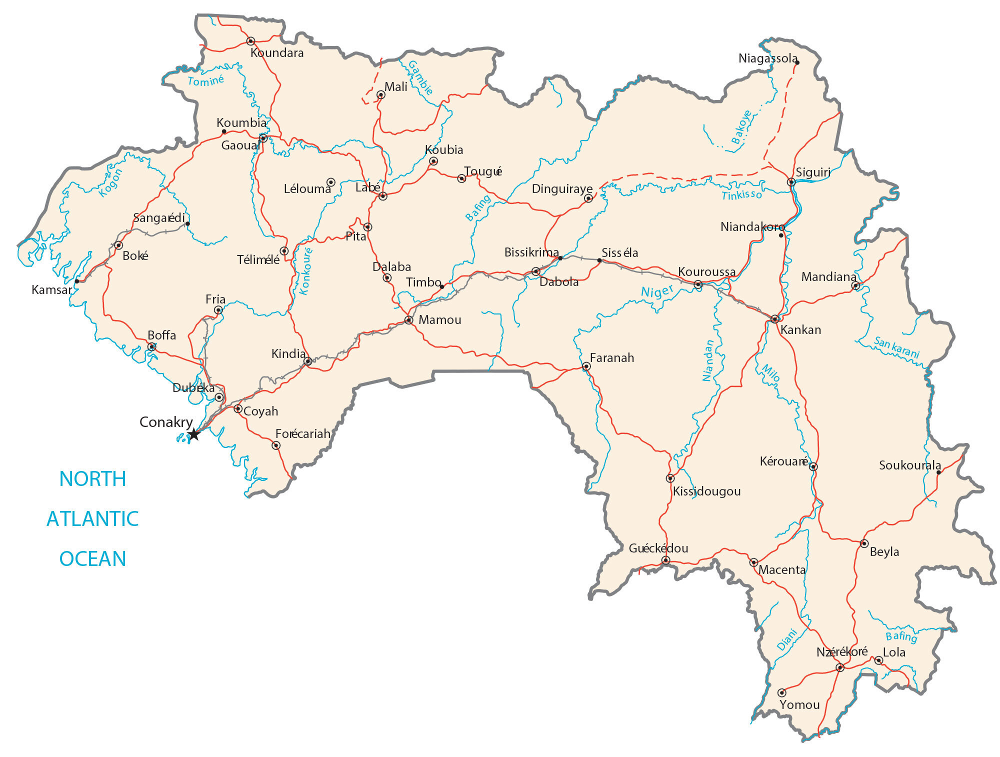

Guinea is a country located in Western Africa. It borders six other African countries. Guinea-Bissau is to the northwest, Senegal is to the north, Mali is to the northeast, Ivory Coast is to the southeast, as well as Liberia and Sierra Leone are to the south.
Its coastline stretches for 506 kilometers (314 mi) off the coast of the Atlantic Ocean. Conakry is the capital and largest city of Guinea along the west coast. Other major cities include Nzérékoré and Kankan.
Go back home